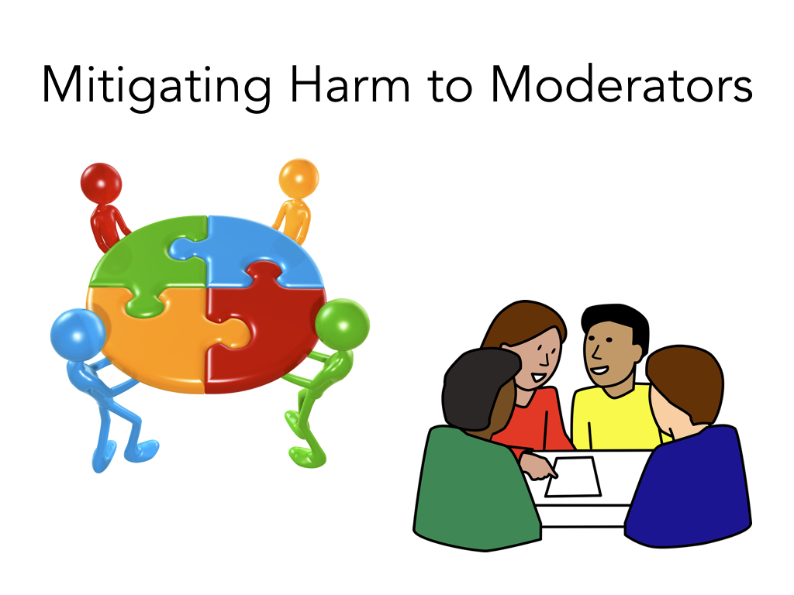

Squadbox: A Tool to Combat Email Harassment Using Friendsourced Moderation
Authors
Kaitlin Mahar, MIT CSAIL (now at MongoDB)Amy X. Zhang, MIT CSAIL
David Karger, MIT CSAIL
Abstract
Communication platforms have struggled to provide effective tools for people facing harassment online. We conducted interviews with 18 recipients of online harassment to understand their strategies for coping, finding that they often resorted to asking friends for help. Inspired by these findings, we explore the feasibility of friendsourced moderation as a technique for combating online harassment. We present Squadbox, a tool to help recipients of email harassment coordinate a "squad" of friend moderators to shield and support them during attacks. Friend moderators intercept email from strangers and can reject, organize, and redirect emails, as well as collaborate on filters. Squadbox is designed to let its users implement highly customized workflows, as we found in interviews that harassment and preferences for mitigating it vary widely. We evaluated Squadbox on five pairs of friends in a field study, finding that participants could comfortably navigate around privacy and personalization concerns.Talks/Interviews:
[OpenTranscripts of talk]
Presentation
This talk was given by Kaitlin Mahar at CHI 2018 in Montreal, Canada.
As you probably already know, online harassment is a really pervasive issue. According to a recent study by the Pew Research Center, about 41% of people have experienced it.
Individual messages can be hurtful on their own.
And, especially when sent in large volumes, these messages can totally overwhelm recipients.
Over the last year and a half, we've been interviewing people who have been recipients
of harassment to better understand all of this. These people come from all sorts of
different areas - anywhere from youtube celebrities with hundreds of thousands of followers
to journalists to activists to climate scientists all the way to regular people who are
harassed by an ex-partner.
Unsurprisingly, one of the things we quickly came to realize was just how different each case is. People have really different ideas about what is harassment, and they also have really different preferences for how they want to handle it. And context is also a really big factor, as I'll talk about more later. The current solutions platforms have provided aren't working for all these different cases.
Unsurprisingly, one of the things we quickly came to realize was just how different each case is. People have really different ideas about what is harassment, and they also have really different preferences for how they want to handle it. And context is also a really big factor, as I'll talk about more later. The current solutions platforms have provided aren't working for all these different cases.
For example, even though you can block users, that doesn't stop motivated harassers from creating new accounts.
Although you can filter out messages based on the words they contain, motivated harassers will find new ways to spell words and get around the filters.
And while platforms have reporting processes in place, the way these processes work is
opaque to users, and reporting each instance of harassment requires a lot of effort.
And some communication methods, like email, have no one to report harassment to at all.
Given the failure of all these current techniques, can we look to techniques that *do* work for
people experiencing harassment, in order to understand how to better tackle it?
One other thing that came up over and over again in interviews that *did* work was the help of
friends and communities. These were people who understood the situations deeply and provided
emotional support throughout the ordeal.
And often, these friends were performing moderation-like tasks as well. For example, one
interviewee told us they would forward messages unopened to a friend to read. Another told us
their friend would go through their comments page and read the positive ones for them.
Hearing about these practices, we began to wonder - how can our
existing communication systems actually support this kind of interaction?
How might communication systems make it easier for you to call upon your
friends or loved ones or your community for help?
To explore this question further and to really fulfill a need for something that we
felt was missing from the existing tools out there, we built Squadbox.
It's a tool currently built for email that we're hoping to expand to more platforms. We started
with email because email has no reporting process in place at all, and email also has an easy API
to work with, but we believe our design can be expanded to any platform with private messaging.
The idea is, Squadbox is basically a way that you recruit trusted friends to join a "squad".
You set up a filter on your email account to automatically forward messages to your friends, the "squad". And these friends review messages before they reach you, and decide whether or not they're
harassment, and then the non-harassing messages get sent back to you.
One question you might ask about this design is: do people even want friends moderating their email? Well,
we found that people already have their friends do this now. For example, one interviewee said her friend
has all her passwords, and when needed will log in and handle her harassment.
So yes, people are already asking their friends to moderate for them.
Additionally, interviewees expressed that they while there were privacy tradeoffs, they would rather have their friends read their messages than continue experiencing harassment. They thought that being harassed was so violating that having a friend read messages would be mild in comparison.
Why should we use friends specifically? Why not paid moderators, or volunteers?
For one, people are more comfortable turning to their friends for support in times of need.
For another, people have far fewer privacy concerns about friends reading their messages than they do about strangers, because they already trust their friends.
When we conducted a field study with pairs of friends, we found that both the moderators and the ones having messages moderated were not very concerned with privacy, and became even less concerned with privacy as time went on.
You also might ask: why would friends do this? Isn't this just another inbox to check?
What we heard from interviewing a couple of friends of people experiencing harassment is that they would "leap at a chance" to do this.
The harassment recipients we interviewed confirmed this, saying that their friends really wanted to help them and regretted the lack of tangible ways to do so.
So Squadbox is a tool to scaffold this kind of workflow, empowering users to control what messages appear in their own inboxes, and empowering friends to help them deal with it.
Another concern this raises is the issue of bystander harm. Won't reading these messages be upsetting for moderators, too?
The people we spoke with who had experienced harassment, or had friends that had, suggested that while it might be upsetting, it would be far less so if it weren't about them or their identity. As this interviewee said: "it's not about you, it doesn't feel the same."
Of course, this is still upsetting work nonetheless, so we're exploring more ways to mitigate that harm, which I'll talk about later on.
Another question you might ask is why we chose to develop a tool that uses humans at all. Isn't this a problem that artificial intelligence should be able to solve?
For one, people define harassment differently. It is very difficult to know from a message and its metadata alone whether a particular individual would consider it harassment, since everyone defines it differently.
For example, here are two definitions of harassment from our interviewees - one described harassment as being about their identity, while another defined it in terms of how much contact there was and the intent of the person contacting you.
For another, harassment is not spam.
It is much easier for machine learning to handle a problem like spam, where there is a more universal definition.
If you think using a certain word is harassing and I don't, how could the same machine learning model work for
both of our messages?
Additionally, harassment is highly personalized, and contextual. It may contain specific information about an individual, or information that is only harassing because of some outside context in the recipient's life. Also, harassers are very motivated to reach particular individuals, while spammers are focused on reaching anyone. This motivation makes them a much more active adversary.
Additionally, harassment is highly personalized, and contextual. It may contain specific information about an individual, or information that is only harassing because of some outside context in the recipient's life. Also, harassers are very motivated to reach particular individuals, while spammers are focused on reaching anyone. This motivation makes them a much more active adversary.
Given this complexity, it seems near impossible to develop any kind of model or completely automated system
that can do this job as well as humans. So we believe it's important for platforms to be thinking about
how they can create tools that keep humans involved, rather than removing them from the process.
Another question: why aren't platform solutions enough?
For one, platform restrictions are easily evaded by motivated harassers. Take blocking, for example:
one interviewee had just a single harasser, but that person made new email addresses with different names
all the time to disguise themselves, so they couldn't block their harasser by name or sender.
Word-based filters that platforms provide are also easily evaded.
What's more, harassment often happens on multiple platforms at the same time, and interviewees
described how their harassment would just be shifted to new platforms when they locked down their account on one platform. The lack of a unified and consistent way to deal with this harassment makes handling it a huge challenge.
Additionally, some things that people consider harassing don't actually violate websites' terms
of service, so reporting it has no effect and doesn't help the user's situation.
While it is clear that we need new tools, there are major challenges in designing this kind of tool. For one, people have very different experiences with harassment.
What's more, preferences for how to handle harassment vary widely.
How can we build a single tool to accommodate such a wide range of harassment types and preferences for handling it, without creating an overwhelming amount of work for human moderators? For the rest of the talk, I'll focus on how what we learned in interviews influenced the design of Squadbox and the features we built into it.
How can we build a single tool to accommodate such a wide range of harassment types and preferences for handling it, without creating an overwhelming amount of work for human moderators? For the rest of the talk, I'll focus on how what we learned in interviews influenced the design of Squadbox and the features we built into it.
In response to this diversity of preferences, we knew squads would need to have a lot of different options. So when you create a squad, you can do all these diff things to configure it. For example, you get to provide any instructions you like for your moderators to see on the site.
For another, you get to choose what happens to rejected messages.
This is because many interviewees told us they do WANT to read their harassment. They just want control over how and when they read it, rather than having it arrive interspersed with their non-harassing communication. For example, we spoke with a columnist who often gets offensive emails from people who disagree with her political opinions. She wants to read her harassment so that she understand the points of views of people who disagree with her - she says this is crucial to doing her job. She just wants to read it when she chooses, rather than all the time.
So, we decided to make this part of the system really customizable. One option you have is that we can keep the harassing messages filed away on the Squadbox website, and then you can go look at them when you feel like it. Another thing you can do is have us send you the harassing messages with a "rejected" tag in the subject line. Then you can use that to do something like filter the mail out of your inbox, into a separate folder.
Besides rejected, moderators can add several different tags, so you could even have specific different behaviors depending on the type of harassment. For example, one interviewee told us they want to know about a threat of doxing or a death threat as soon as possible, but that an insult they wouldn't need to see at all. So then your email client settings can be used to handle messages however you want based on those tags.
We also give the moderator an option to write why they rejected something. this provides an opportunity for the owner and mod to have a conversation about the mismatch in expectations if a mod rejects something that should have been approved.
The ability to move harassing content out of your inbox was really important to our interviewees. we heard from so many people about going to their inbox and having an unsettling experience sifting through harassing messages that were mixed in with emails from their boss or their friends. Or in some cases, people got so much harassment that it was basically a denial of service attack against their ability to have regular communication.
Related to that, another thing we learned from our interviews was that harassment usually isn't at a consistent volume, but comes in waves, sometimes with peaks around certain predictable events. During these peaks, their inboxes could become unusable due to the high volume of harassing messages. For example, a YouTube personality told us they would get a lot of harassment for a few days after posting a new video, and then it would die down. This inspired us to build an "on/off" switch into Squadbox; when Squadbox is off, all messages are automatically approved, except those from blocked senders.
This is practical for the user, because it means they only have to ask their friends for help when they need it, and it also means they don't have to deal with any of the downsides of moderation (such as delay, or privacy concerns about your friend reading your messages) unless it's needed at that moment.
Speaking of privacy concerns, many of our interviewees said they could think of lots of people whose emails didn't need moderation, and in fact some that they specifically did not want a mod to see due to privacy concerns, such as emails from their bank or their significant other.
So we added a whitelist feature, and emails from those senders automatically skip moderation.
while we all know about whitelists, whitelists are pretty hard for an individual to manage and maintain, so we provide a interface and programmatic way to deal with it.
If you use Gmail, we import the email addresses of your contacts and people you've recently emailed via their API to help you build that whitelist. and we also use the API to auto-create the filters that forward emails to Squadbox.
Similarly, we have a blacklist feature, where emails from certain senders are rejected automatically.
And something pretty cool about these features is that the moderator can work alongside the owner to build up these lists over time, if the owner chooses to enable it.
Additionally, if you choose to enable the option, your moderators can help you build your whitelist and blacklist.
When a moderator approves a message, they're given the option to also add its sender to the whitelist. Similarly, when they reject a message, they can add the sender to the blacklist.
Something else you can configure about Squadbox is how exactly the initial pool of messages to moderate comes in.
One way is to just forward all your messages. then whitelisted senders' messages will come back immediately and the rest get moderated.
A different way you could use Squadbox is by just cutting out the forwarding step and giving out your squad address, @squadbox.org, as your public contact address. Of course, this solution won't work to deal with harassment on an existing email account, put some interviewees told us they would want to use this strategy for their business email, for example. This has the trade-off that people emailing you know their messages are being moderated.
A third option is that you can use any email filter your client supports in order to select what is forwarded. For example:
We spoke with someone who was harassed by her ex over email. But they had a child together, so they also needed to have legitimate email communication, and she couldn't block him entirely. But she also thought it would be overkill to have all her messages be moderated, and only wanted messages from his email address moderated. Since email filters determine what gets forwarded, she could use Squadbox by setting up a filter to forward just messages from him.
This story of the ex was really interesting and inspired another feature; that person also mentioned even getting messages where some of the content was harassing and some of it was important to read. So a feature we're now working on is allowing moderators to redact some parts of messages and just send what is important for the owner to see.
Since interviewees were concerned about asking friends to do this amount of work, we wanted to make it easy for moderators to do their job. The whitelist feature helps cut down on volume a lot, but for messages that do need moderation, it was important to build a usable interface and minimize their work.
One way we do this is by adding some assistance from machine learning. We have been working with Google Jigsaw and we incorporate scores from Google's Perspective API, which is trained on comments and predicts the likelihood of a message being an attack, obscene, etc. Since the Perspective model may not suit all users' definitions of harassment, we just provide these as a tool for the moderators to use if they choose. We're exploring more ways to integrate these scores into the tool, such as by using them to automatically tag or group messages.

We've been thinking in general about how to mitigate harm to moderators. For one, having multiple moderators share the load helps with this. We also take turns notifying moderators, so that the notifications are spread out between them.
To minimize how much Squadbox and harassment impacts their lives, we only ever show them harassing messages on the website when they choose to visit, and never in their own inbox.
We're continuing to think of more ways to minimize harm to them, such as obfuscating the message and having the moderator reveal only a minimal amount of it to determine if it's harassing.
In summary, here are the major features we added to Squadbox based off of our interviews.
We’re continuing to build Squadbox, and in the future we plan to expand to other platforms where people face harassment in private messages.
We also are working to make the tool more secure and robust so it can support a large user base and be protected from malicious users.
This will enable us to test the tool longer-term with harassment recipients.
This is the response from a person who is very high profile and actually
has a paid staff of people moderating their email who received a demo of our too.
So here are the four main points we want to leave you with:
Harassment is different for everyone.
Automated tools aren't enough.
Friends can and want to help.
Systems to support friendsourcing strategies can make them more effective.
Harassment is different for everyone.
Automated tools aren't enough.
Friends can and want to help.
Systems to support friendsourcing strategies can make them more effective.
Squadbox is up and available at squadbox.org. Anyone can use it, and we'd love to hear your feedback. If you are or know a harassment recipient, we would really like to speak to you in order to continue learning about the diversity of harassment experiences, and the features squadbox needs to handle that. If you are at a communication platform company, we want to talk to you about connecting to your platform.
With the help of the Mozilla Open Leaders program, we've made Squadbox an open source project, and we are seeking contributors to help us build, design, and test it. You can find all of our code and a list of issues we need help with on our GitHub repository (linked from the website.) Thank you!